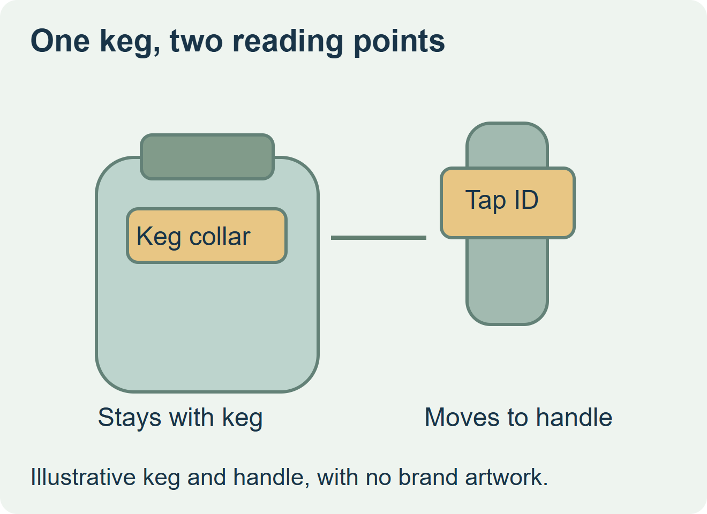
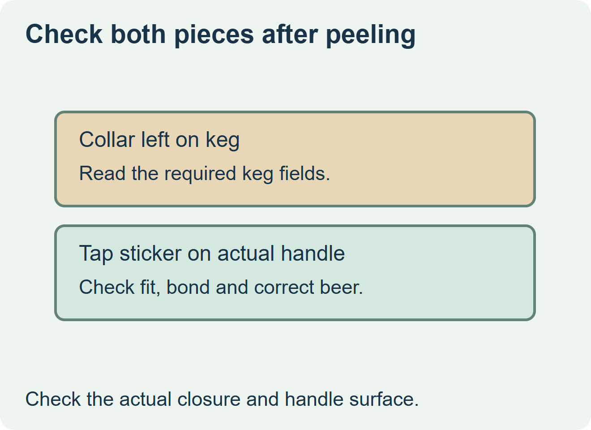

Evaluate a detachable tap handle label when a keg regularly needs a matching tap identifier and the two parts travel together. Order separate tap labels if handles are reused across several kegs, replacements are issued independently, or the collar would lose information needed at receiving or return. Write down what remains readable after the sticker is removed before approving the artwork.


Define what each piece does after delivery
The collar stays with the filled keg for its intended handling route. The tap label moves to a different surface and serves a different reader. Reserve the collar area for the brewery’s required keg information and use the detachable area for the approved tap message. Avery Dennison describes one converter’s example of a pressure-sensitive tap label incorporated into a non-adhesive collar. It illustrates a specialist construction that should be quoted and sampled with a converter that supports it. Avery Dennison’s keg collar case study
| Use pattern | Order route | Acceptance evidence |
|---|---|---|
| One new tap label normally follows each keg | Compare an integrated detachable design with a paired separate kit | The receiving user can identify the correct piece and the collar remains readable after peel. |
| One tap label stays in use across several kegs | Buy collars by fill volume and tap labels by installation and replacement demand | Retain a tap label reorder code and stock it by beer or artwork version. |
| Several accounts use different handle surfaces | Sample the corresponding tap labels separately before committing to one design | Check fit and bond on each representative handle, including its cleaning and handling route. |


Trial the handoff as an assembly
Give the receiver the same package the brewery intends to ship. Have staff find the keg reference, peel the sticker, put it on the actual tap handle and read the collar again. Inspect the area exposed by peeling and check whether any required field or intended collar strength was lost. Have the brewery approve the final copy and verify each beer’s paired artwork before ordering.
Request a quote in usable collars and usable tap labels by SKU. If the integrated option produces one of each, compare that ratio with actual tap replacements. Include separate replenishment where the route needs it. Keep the collar, tap adhesive and proof as separately identified parts even when delivered together.
Discuss the unresolved label requirement
Send the keg collar drawing and fitting clearance, the tap handle surface and usable dimensions, the fields that must remain on the collar, quantities by beer, and expected collar and tap label replacement rates. Review beverage label options and prepare a label specification inquiry. The contact page opens an email draft and lists email or WhatsApp for attachments. Supply, proof options, testing, pricing and timing require project confirmation.